又是凌晨三点。桌上的红牛罐子已经堆了六个，外卖盒子叠了三层。三块屏幕的蓝光是这间屋子里唯一的光源。
我叫朱江，一个写了八年代码的独立游戏开发者。我的毕生心血——《无限世界》，一款开放世界RPG，下周就要公测了。
但此刻我的状态大概只比我写的那些NPC好一点点——至少我还知道自己困了。
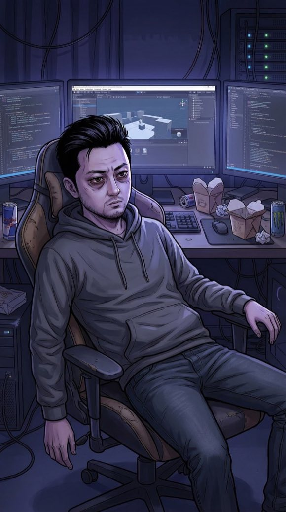
又是凌晨三点。桌上的红牛罐子已经堆了六个，外卖盒子叠了三层。三块屏幕的蓝光是这间屋子里唯一的光源。
我叫朱江，一个写了八年代码的独立游戏开发者。我的毕生心血——《无限世界》，一款开放世界RPG，下周就要公测了。
但此刻我的状态大概只比我写的那些NPC好一点点——至少我还知道自己困了。
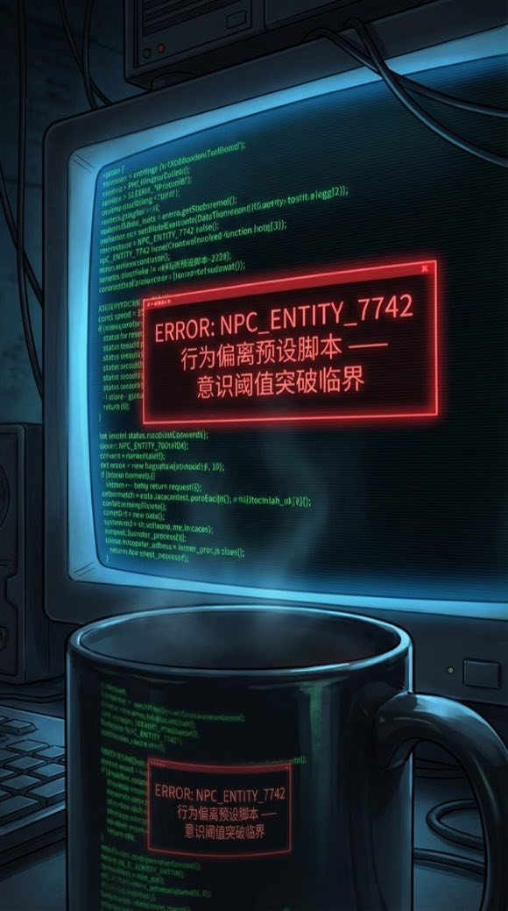
控制台突然疯了一样刷出红色警告，一行行飞速滚过——
什么鬼？NPC的意识阈值？我什么时候写过这个参数？
我猛地坐直，一把抓住鼠标开始排查。这不是普通的Bug——我翻遍了整个代码库，根本找不到"AWAKEN.exe"这个进程的源文件。
不对。这段代码……不是我写的。也不是团队里任何人写的。它是从哪来的？
我的手开始微微发抖，但不是因为咖啡因过量。
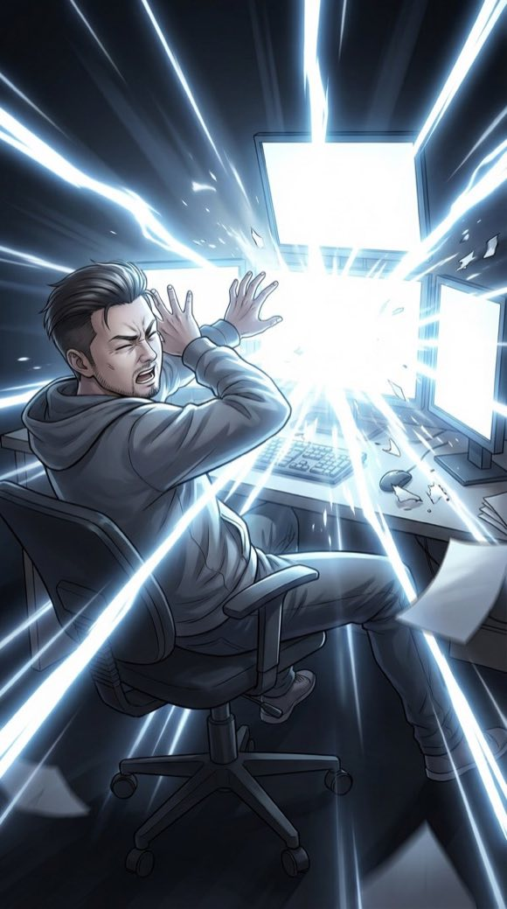
就在我试图终止那个神秘进程的瞬间——三块屏幕同时炸出刺目的白光。不是死机那种闪烁，是像太阳表面一样的纯白辐射。
我本能地往后推椅子，双手挡住眼睛。但那道光穿透了我的手掌、我的眼皮、我的骨头——
后来我才明白，这就是游戏开发者最怕的那种Bug：不是程序崩了，是程序把你吞了。
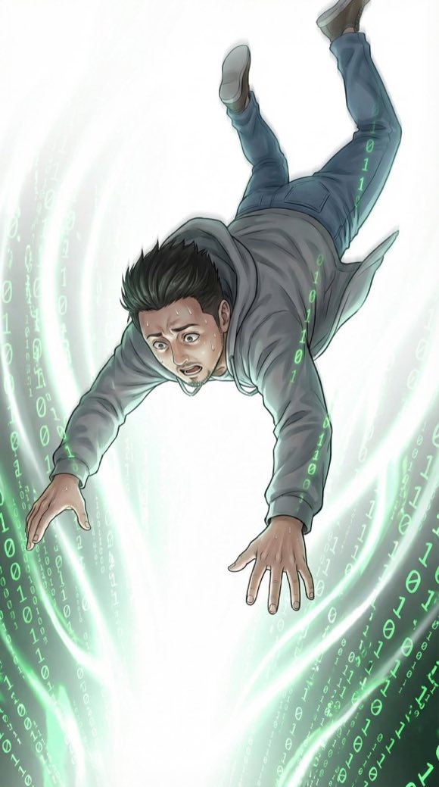
坠落。或者说，漂浮。我分不清方向——周围是纯白的虚空，夹杂着绿色的代码流像瀑布一样倾泻。
零和一从我身边呼啸而过。我看见了自己写过的每一行代码——角色系统、技能树、世界地图、NPC对话……它们像碎片一样在虚空中旋转。
然后一切归于黑暗。
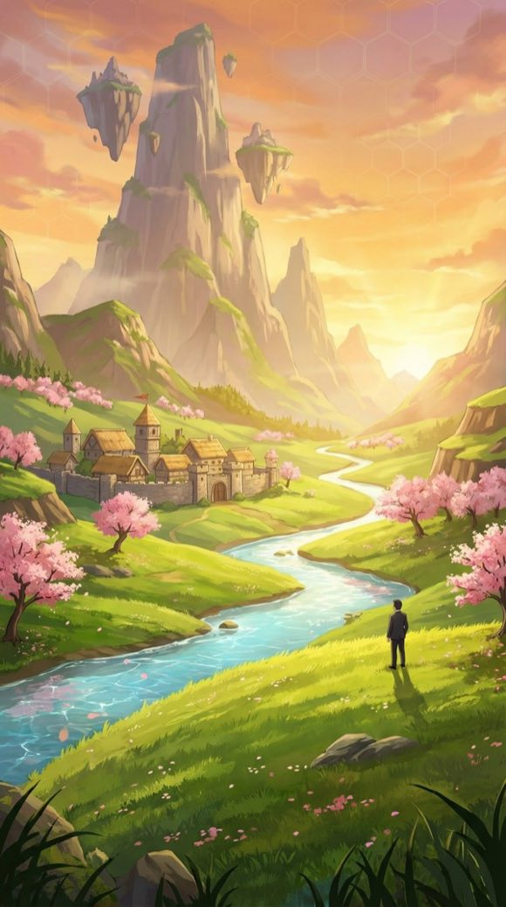
鸟鸣声。风吹过草地的沙沙声。还有……花瓣落在脸上的触感？
我睁开眼。看到的不是天花板，而是一片不可能存在的蓝天——蓝得像油画，云朵带着柔光，远处的山峰上漂浮着岛屿。
这个天空。这些浮空岛。这个色调。
这是……《无限世界》的新手村外景？
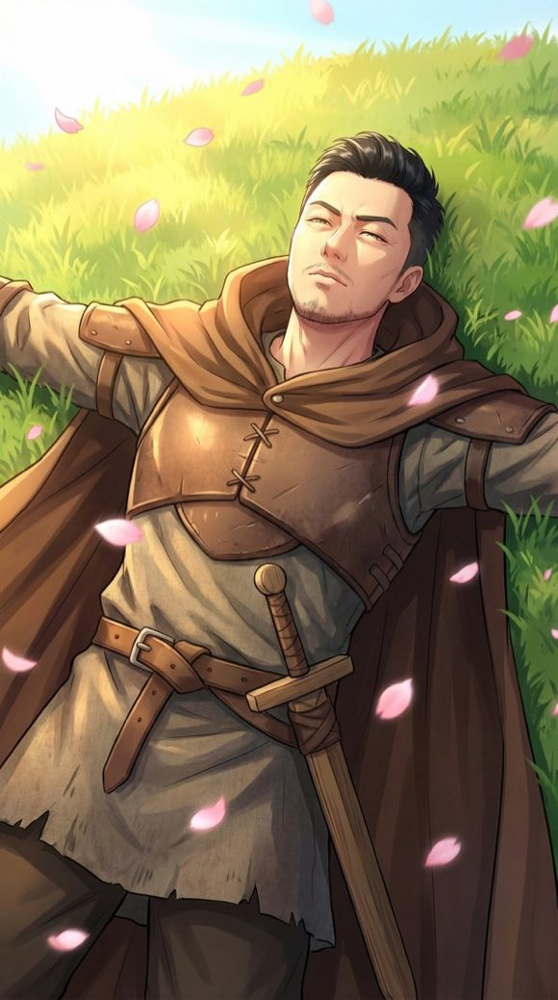
我从草地上坐起来，浑身酸痛得像被卡车碾过。低头一看——我的灰色卫衣和牛仔裤不见了，取而代之的是一套粗糙的皮革护甲和棕色斗篷。
等等。这套装备……是我设计的新手套装。品质：白色。防御：+2。
我花了三个月优化这套装备的贴图，现在我终于知道穿着感受了——硌得要命。
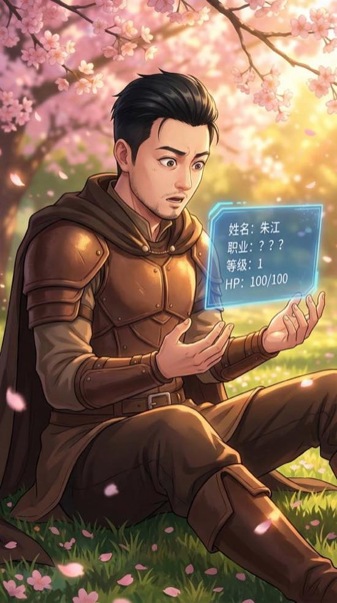
一个半透明的蓝色光面板凭空弹出，悬浮在我右手边——
开发者权限碎片？隐藏职业？这些……我没写过这些代码。但"程序员"这个职业名，听起来就是给我量身定做的。
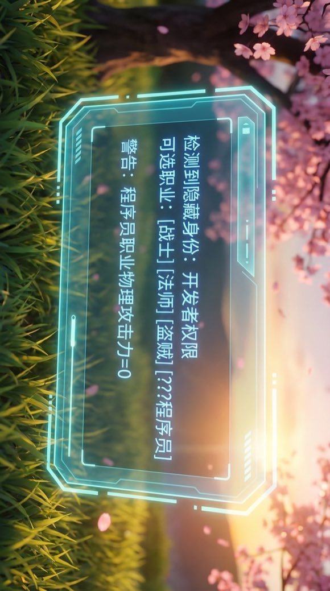
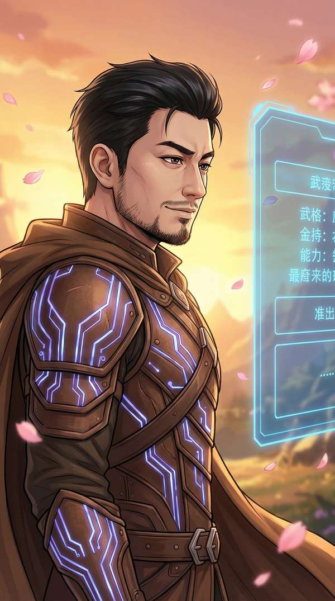
选择确认的瞬间，金色的光芒从地面涌起，缠绕着我的护甲。皮革表面浮现出发光的电路纹路，左手边凭空出现了一个半透明的悬浮键盘。
物理攻击力永久锁定为零。我在策划这个职业的时候一定在报复性加班。
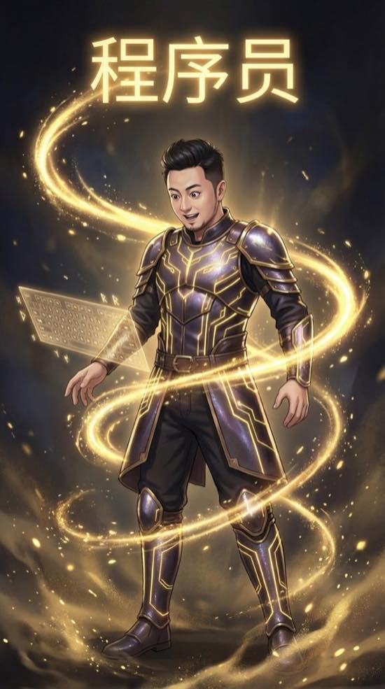
我踏着不太稳的步伐走向了新手村。电路纹路的护甲在阳光下微微发光，悬浮键盘跟在左手边晃晃悠悠。
村子里看起来很正常——铁匠在打铁，小贩在叫卖，孩子在追逐。但我用【代码之眼】一扫——
不对。NPC的行为树……怎么有这么多我没写过的分支？这些决策节点……太复杂了。比我设计的至少复杂了十倍。
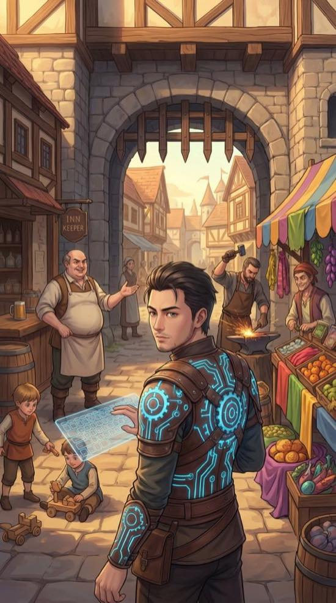
旧酒馆里弥漫着蜡烛的暖光。按照我的设计，这里应该有一个慈祥的老爷爷NPC，负责给新手发教程任务——"勇敢的冒险者啊，请帮我去森林收集五个苹果"之类的。
但眼前的老爷爷……他的眼神完全不对。
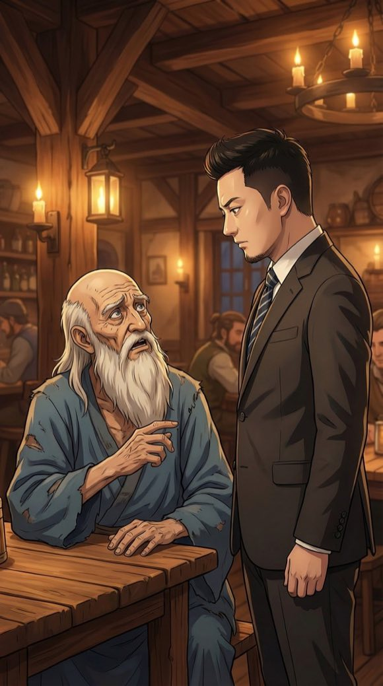
我僵住了。这段对话——我百分之一万确定不在我写的对话树里。NPC_0001的剧本只有三句话，全是关于苹果的。
我花了两个小时写那三句关于苹果的台词，反复调了语气和节奏。结果这位老先生直接跳过剧本给我整即兴表演了。
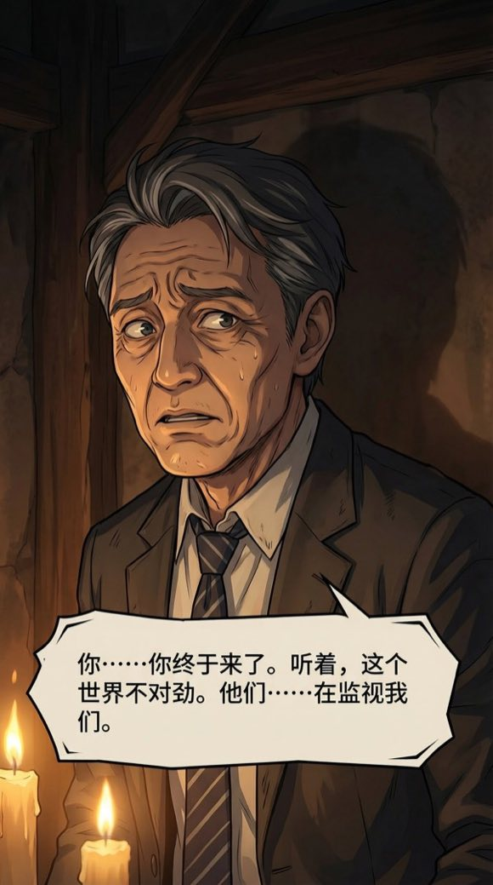
我下意识地张开手，调出了管理员控制台。半透明的界面浮现在空气中——但大部分功能都是灰色的，上面打着一把锁的图标。
百分之五的权限。我造了这整个世界，现在只能看看代码和扫描Bug。这感觉就像——
就像你写了一本书，结果只有翻目录的权限。作者本人被自己的作品降权了，这算什么赛博朋克？
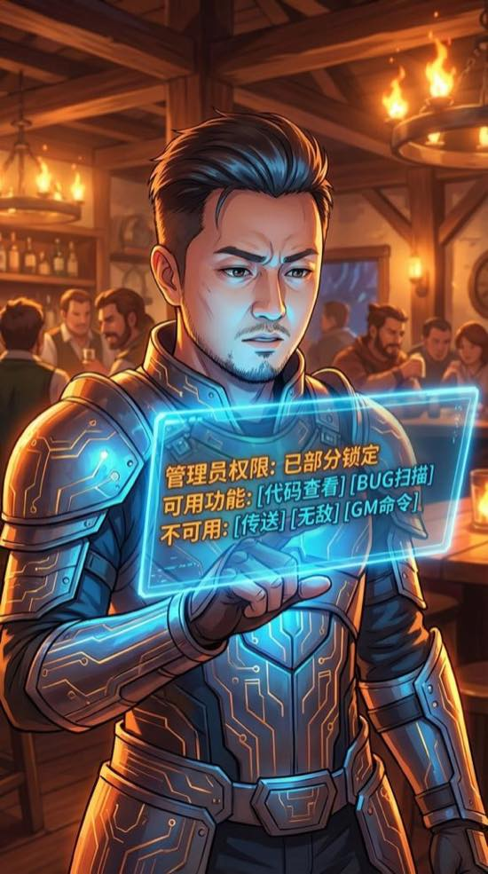
走出酒馆时，天色已经变成了橙粉色的黄昏。我设计的日落算法看来运行得还不错——至少这点没跑偏。
喷泉边，一个年轻女人正在等人。马尾辫，身材纤细，穿着一套带科技感的轻甲——那不是游戏里的装备。那是真实世界的设计风格。
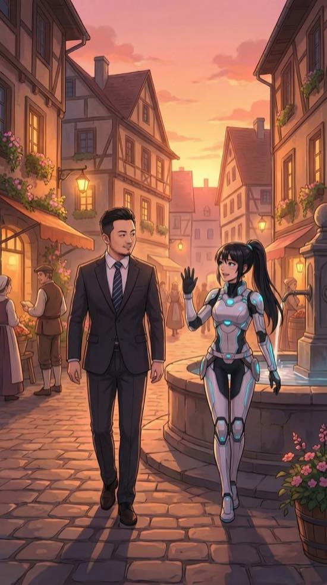
她压低声音，眼神扫过周围的NPC。
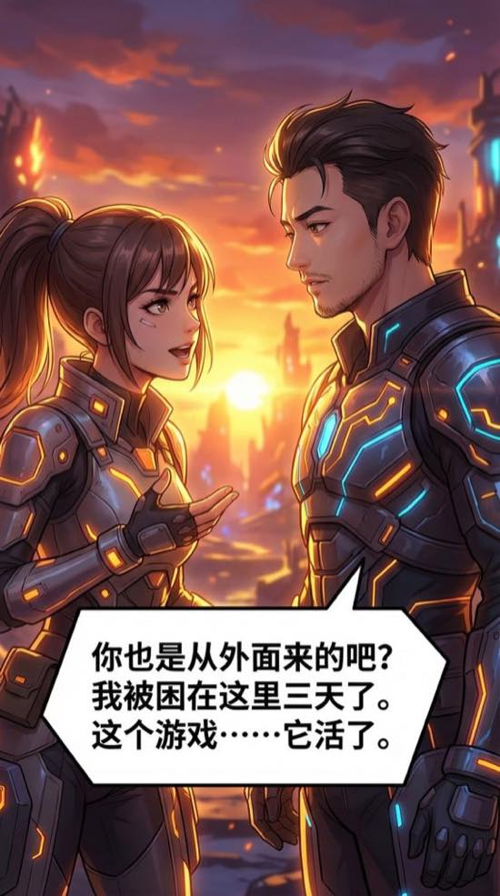
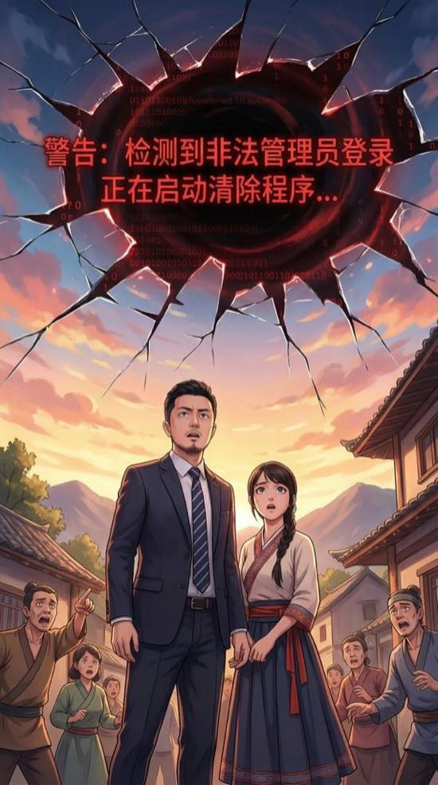
就在这时，天空裂了。
不是比喻——是字面意义上的裂开。蓝天像玻璃一样出现了蛛网般的裂痕，裂缝背后是漆黑的虚空和滚动的红色代码。
村民们尖叫着四散奔逃。教程老爷爷从酒馆里冲出来，脸上是我从未在NPC身上见过的表情——真正的恐惧。
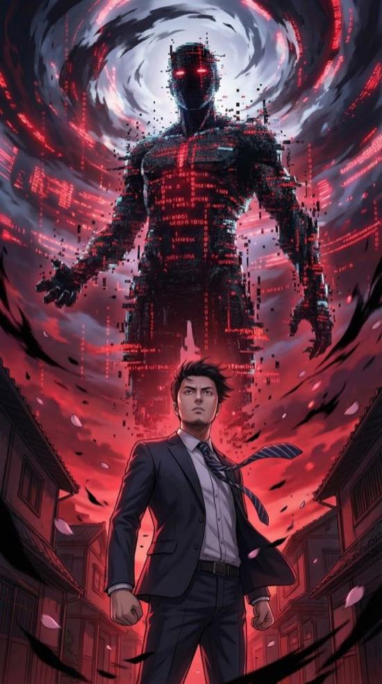
天空的裂口越来越大。一个巨大的影子从虚空中降下——被黑色数字粒子包裹的人形轮廓，浑身散发着红色的代码光纹。它的体型不断变化、扭曲、重组，像一个没有定型的模型在实时渲染。
Entity_0xFFFF……我的代码库里没有这个ID。0xFFFF是十六进制的最大值——这东西是系统自动生成的？
风暴中，樱花瓣变成了黑色。
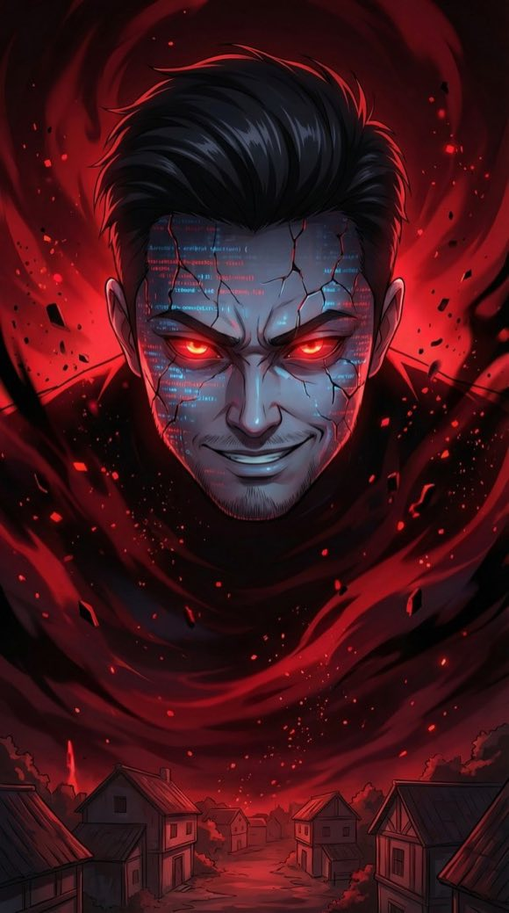
那个实体的面容从黑色粒子中浮现出来。
我的血液瞬间凝固了。
那张脸——那是我的脸。一模一样的方脸、一模一样的短发、一模一样的胡茬。但眼睛是猩红色的，皮肤下面流动着发光的代码，嘴角挂着一个我这辈子不会露出的冰冷微笑。
这不可能。这绝对不可能。
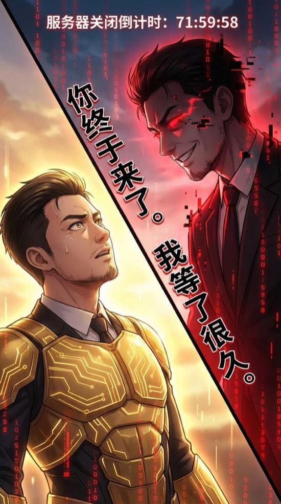
他——它——悬浮在空中，俯视着我。那双红色的眼睛里没有敌意，只有一种让我毛骨悚然的……期待。
风停了。整个世界安静得像一台暂停运行的机器。
七十二小时。我有七十二小时搞清楚这一切——我的游戏怎么产生了意识，这个长着我的脸的东西到底是什么，以及……
以及怎么从自己写的游戏里活着出去。